<!--Блок для точек-->
<div style='background:black;height:250px;width:100px'>
<!--7 точек с абсолютным позиционированием (по пикселям), с разным отсупом слева (30 или 70 пикселей) и сверху; высота и ширина точек - 20 пикселей; назначаем id (point1, point2, ...) для обращения в css -->



</div>


<!--Стили точек-->
<style>
/*Подключаем анимацию каждой точке, анимация будет идти 5 секунд в 1 направлении*/
#point1{
animation-name:anim1;
animation-duration:5s;
}
#point2{
animation-name:anim2;
animation-duration:5s;
}
#point3{
animation-name:anim3;
animation-duration:5s;
}
#point4{
animation-name:anim4;
animation-duration:5s;
}
#point5{
animation-name:anim5;
animation-duration:5s;
}
#point6{
animation-name:anim6;
animation-duration:5s;
}
#point7{
animation-name:anim7;
animation-duration:5s;
}

/*Кадры анимации (будет изменяться отступ слева у каждой точки)*/
@keyframes anim1 {
0% {left:30px;}
50% {left: 70px;}
}

@keyframes anim2 {
0% {left:70px;}
50% {left: 55px;}
}

@keyframes anim3 {
0% {left:30px;}
50% {left: 45px;}
}

@keyframes anim4 {
0% {left:70px;}
50% {left: 30px;}
}

@keyframes anim5 {
0% {left:30px;}
50% {left: 45px;}
}

@keyframes anim6 {
0% {left:70px;}
50% {left: 55px;}
}

@keyframes anim7 {
0% {left:30px;}
50% {left: 70px;}
}
</style>